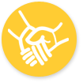

-

Enfoque & Servicio
En nuestro Centro de Desarrollo Integral e Iglesia Cristiana, nos comprometemos a acompañar y fortalecer a las madres lactantes y sus bebés a través de un enfoque integral que promueva su bienestar físico, emocional y espiritual. Brindamos apoyo, orientación y formación a las madres para fomentar una crianza amorosa, saludable y basada en valores cristianos, asegurando que sus hijos crezcan en un entorno seguro, lleno de amor y oportunidades para su desarrollo.
más > -
¿Porque Donar?
Tu donación al Centro de Desarrollo Integral impacta directamente en la vida de madres lactantes y sus bebés, asegurando que reciban el apoyo necesario. Con tu generosidad, promovemos su bienestar físico, emocional y espiritual, brindándoles recursos para un desarrollo saludable. Cada aporte permite ofrecer orientación y formación, fortaleciendo la crianza con amor y valores cristianos.
más > -
Nuestros Servicios
En nuestro Centro de Desarrollo Integral e Iglesia Cristiana, creemos que cada madre y cada bebé merecen un comienzo lleno de amor y cuidado. Por eso, trabajamos con programas específicos para acompañarlos desde el embarazo hasta los primeros años de vida, garantizando su bienestar físico, emocional y espiritual. Nuestro propósito es fortalecer a las madres en su rol, brindando herramientas esenciales para la crianza y el desarrollo saludable de sus hijos.
más >
Testimonios
En nuestra comunidad, cada historia es un reflejo del impacto que generamos. Las madres que han formado parte del CDI comparten sus experiencias de crecimiento, aprendizaje y amor incondicional. A través de sus testimonios, conocerás cómo este espacio ha transformado vidas, brindando apoyo, orientación y esperanza a quienes más lo necesitan. Sus palabras reflejan el compromiso y la dedicación que tenemos con cada familia que confía en nosotros
-
Testimonio de la Tutora - Diana
Desde que inicio mi labor en el CDI, he sido testigo de cambios profundos en la vida de madres y niños. Con pasión y entrega, acompaño cada proceso de crecimiento, brindando apoyo integral que fomenta el bienestar y la transformación personal. Mi compromiso se renueva día a día al ver cómo cada familia se fortalece y progresa, impulsando un futuro lleno de esperanza y oportunidades. más > -
Testimonio de Supervivencia – María
Desde que mi hijo ingresó al programa de Caminadores, he notado cambios notables en su desarrollo. Las actividades lúdicas y el seguimiento personalizado han estimulado su curiosidad y habilidades motoras. El apoyo del CDI nos ha brindado confianza para enfrentar desafíos. Estoy agradecida por la transformación positiva que ha generado en la vida de mi pequeño, dándole un camino lleno de oportunidades con gran ilusión. más > -
Testimonio de Caminadores – Luisa
Desde que mi hijo ingresó al programa de Caminadores, he notado cambios notables en su desarrollo. Las actividades lúdicas y el seguimiento personalizado han estimulado su curiosidad y habilidades motoras. El apoyo del CDI nos ha brindado confianza para enfrentar desafíos. Estoy agradecida por la transformación positiva que ha generado en la vida de mi pequeño, dándole un camino lleno de oportunidades con gran ilusión. más > -
Testimonio de Supervivencia – Carmen
Al unirme al programa de Supervivencia, descubrí un espacio de acogida y aprendizaje que transformó mi experiencia de maternidad. Con asesoría profesional y un entorno lleno de empatía, superé mis miedos y fortalecí mi autoestima. Ahora mi bebé y yo vivimos momentos llenos de alegría y crecimiento. Cada sesión del CDI me reafirma que el cuidado y la dedicación son la clave del éxito siempre. más > -
Testimonio de Caminadores – Sofía
El programa de Caminadores ha sido fundamental para el crecimiento de mi hijo. Desde el inicio, su desarrollo físico y emocional ha mejorado notablemente gracias a actividades adaptadas y atención individualizada. La dedicación del equipo del CDI nos ha permitido ver un cambio real en su confianza y socialización. Me siento agradecida por el impacto positivo y la seguridad que ahora disfruta mi pequeño, siempre. más >
Fundamentos
-
Fundamento de Valor y Dignidad. Destaca la visión de que cada niño es un regalo precioso y valioso desde la concepción. más > -
Fundamento de Balance y Plenitud. Un modelo perfecto para el desarrollo en las cuatro áreas: cognitiva, física, espiritual y socioemocional. más > -
Fundamento de Educación y Guía. Subraya la importancia crítica de la enseñanza y el modelado de valores durante los primeros años de vida. más > -
Fundamento de Calidad y Compromiso. Aplica a la labor de su centro, asegurando a los padres que su equipo trabaja con el máximo esfuerzo y dedicación. más > -
Fundamento de Relaciones y Cuidado. Asegura que el trato a los niños y la interacción con las familias se basa en el amor y la fe cristiana. más > -
Fundamento de Seguridad y Confianza. Transmite a los padres un mensaje de que, además de los cuidados humanos, el centro está bajo la protección de Dios. más > -
Fundamento de Apoyo a los Padres y Equipo. Reconoce que la crianza y la enseñanza requieren guía divina, invitando a la comunidad a buscar la dirección de Dios en su labor diaria. más >
-
Frase del Dia
Cargando...